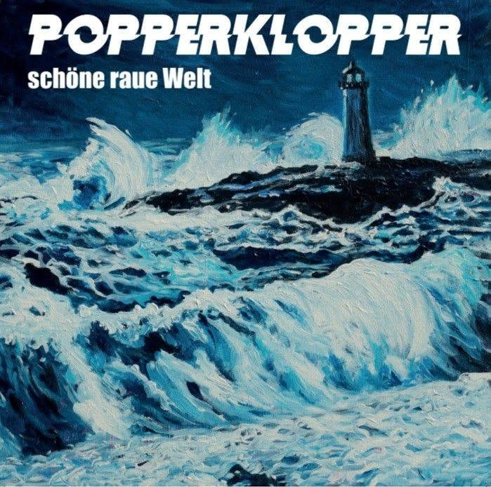

Review
POPPERKLOPPER - Nicht allein

Mit POPPERKLOPPER habe ich ein Problem.
Ich mag die Band.
Nicht nur auf Platte. Die Leute dahinter begleiten mich seit Jahren, privat ebenso wie auf meinem YouTube-Kanal. Das schreibe ich lieber gleich hin, damit hier niemand nach einer Neutralität sucht, die RandaleFUNK sowieso nie angeboten hat.
Mein eigentliches Problem: Ich feiere fast alles von diesen Banausen.
Noch eine Lobeshymne, und irgendwann glaubt mir keiner mehr, dass Carsten mir dafür nicht heimlich eine Kiste Bier vor die Tür stellt.
Bei "Nicht allein" hatte ich zunächst endlich etwas, an dem ich mich festbeißen konnte.
Ich habe den Text beim ersten Durchlauf nicht richtig verstanden.
Nicht die einzelnen Worte. Die Richtung.
Da sind kreisende Gedanken, Einsamkeit, Angst, Scherben und diese körperliche Starre, bei der selbst ein offenes Auge nichts mehr findet. Alles ziemlich deutlich. Trotzdem wusste ich erst nicht, ob Carsten gerade trösten, erinnern oder einfach nur beschreiben will, wie verdammt eng es im eigenen Kopf werden kann.
Also noch einmal gehört.
Und den Text danach noch einmal gelesen.
Der Refrain versucht nicht, die Verzweiflung mit einem flotten Spruch wegzuwischen. Niemand bekommt erzählt, er müsse nur aufstehen, positiv denken oder endlich mal wieder unter Leute gehen.
Stattdessen erinnert der Song daran, was man bereits überstanden hat. Und dann steht da dieser einfache Satz:
"Es ist immer jemand da."
In den falschen Händen wäre das ein Kalenderspruch über einer Sonnenuntergangsfotografie.
Hier klingt es eher wie eine Zusage.
Nicht: Alles wird gut.
Sondern: Du musst durch diesen Scheiß nicht völlig alleine.
Bei Carsten habe ich sowieso das Gefühl, dass hinter solchen Zeilen mehr steckt, als man beim ersten Hören mitnimmt. Der Text erklärt seine Herkunft nicht. Er lässt offen, wer da gerade kämpft und wer danebensteht. Vielleicht ist genau das der Grund, warum man sich so leicht selbst darin wiederfindet.
Musikalisch bleibt mir leider schon wieder wenig Platz für gepflegtes Gemecker. Carstens raue Stimme hält den Trost davon ab, zu glatt zu werden. Das wirkt nicht wie der eine Pflichtsong fürs Herz zwischen zwei schnelleren Nummern.
Es klingt, als müsste das gesagt werden.
Nach "Halbmast" und "Hey Typ" ist "Nicht allein" ein weiterer Blick auf Schöne raue Welt, diesmal deutlich persönlicher. Das Album erscheint am 11. September 2026.
Und damit ist sie da.
Die nächste Lobeshymne.
Peinlich.
Aber Gemecker wäre diesmal nicht kritischer.
Es wäre einfach gelogen.
POPPERKLOPPER - Nicht allein auf YouTube
Nicht allein streamen
Schöne raue Welt vorbestellen
RandaleFUNK-Review zu Halbmast
POPPERKLOPPER auf Instagram